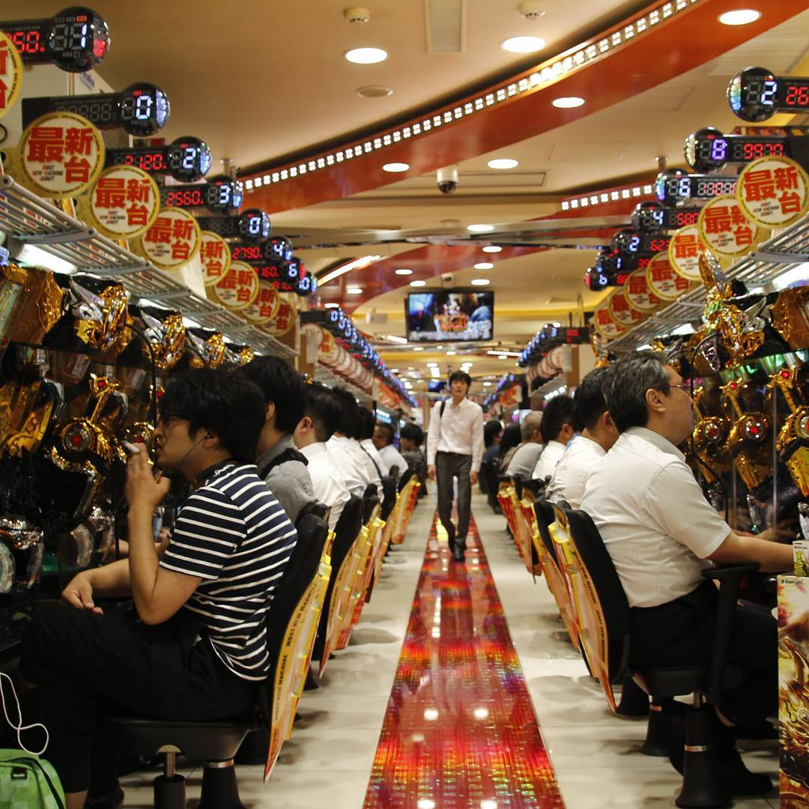
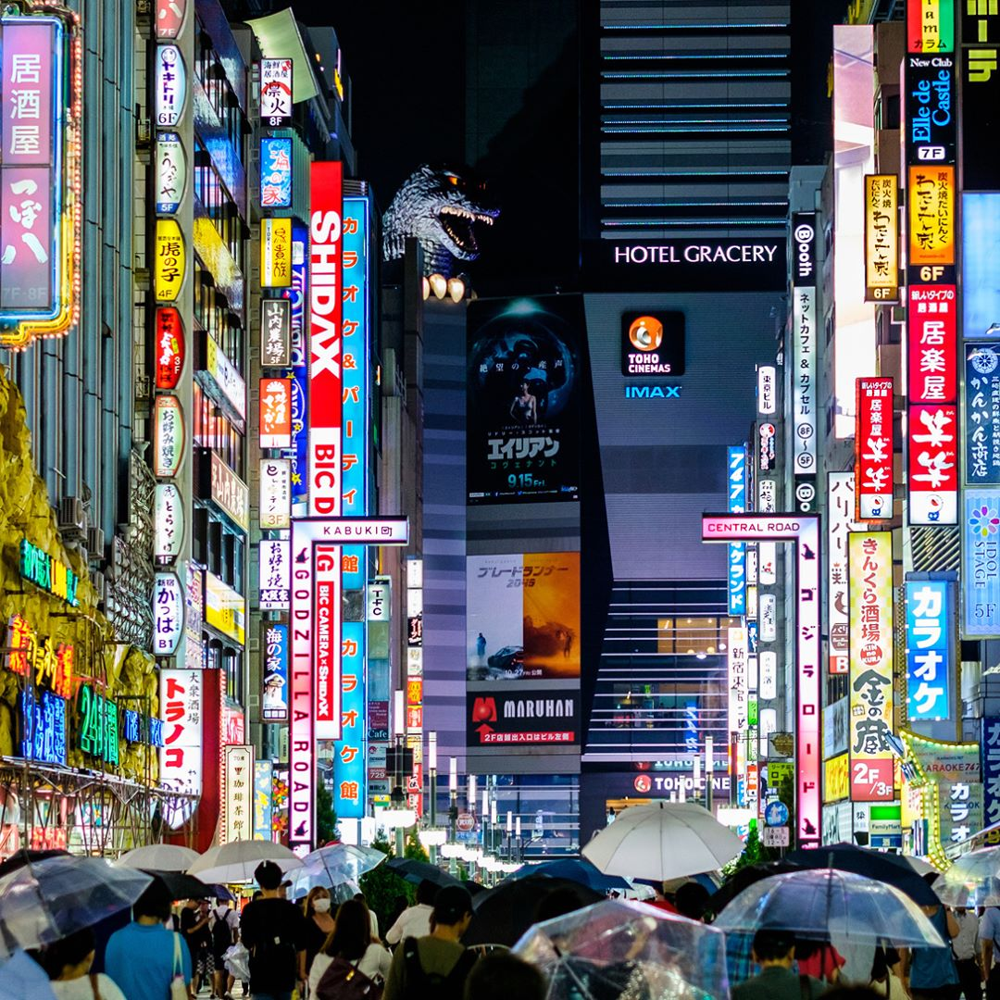
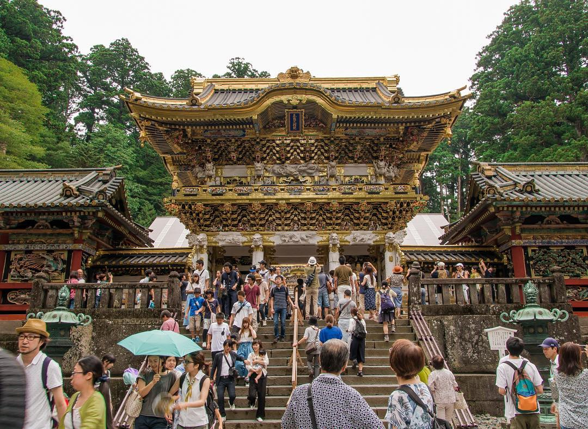

Places To Visit In Japan
-
Mt Fuji

In recent years Japan’s largest active volcano has been attracting challengers from across the globe. Every summer, Mt. Fuji’s climbing season officially begins in early July and runs through the middle of September. During this brief seasonal window, there is relatively little snowfall on the mountain and the weather tends to be quite mild. That said, time for a quick disclaimer: despite its beauty, Mt. Fuji is a challenging beast. If you’re planning to attempt a climb please do some research first and have an honest discussion with yourself regarding your physical wellness, condition, and capabilities. Nothing spoils a vacation more than having to experience an airlifted rescue off the mountain
-
Akihabara
Calling all nerds! Akihabara has earned the well-known designation of being the world’s geek capital. From anime and manga to video games and computers, you will be hard pressed to find a more concentrated collection of geek culture on this planet. If you’re looking to experience a maid cafe (or even something a little more risque) look no further than fantastical Akihabara
-
Hitsujiyama Park

Japan is known for its cherry blossoms so visiting during cherry blossom season is an absolute must. Just look at those flowers! Visit Hitsujiyama Park for the picturesque shibazakura which translates as ‘lawn cherry blossoms’.From late April to early May, head to Shibazakura Hill in Hitsujiyama Park. With over 400,000 trees of nine different varieties, it’s a perfect patchwork of pink, red, white and violet, set against the backdrop of the gargantuan Mount Buko. For some serious Instagram inspo, catch the Chichibu Shibazakura Festival in the park, where the petals are arranged in an extravaganza of shapes and swirls.
-
Kabukicho
Shinjuku is famous for its overwhelming neon signs and there’s no place more exemplary of this than Kabukicho. The area takes its name from a Kabuki theatre that was erected in the vicinity following the devastating aftermath of World War II. Since that time, Kabukicho has evolved into one of Japan’s biggest red light districts and is a haven for numerous drinkeries, funky hostess/host clubs, and other novel adult diversions.
-
Nikko
Nestled against the mountains of Tochigi Prefecture, Nikko is one of eastern Japan’s most important cultural spots. The city’s main attraction is the Toshogu Shrine where Tokugawa Ieyasu, the legendary founder of the Tokugawa shogunate, is enshrined. Nikko also has some other enchanting settings such as Futarasan Shrine and the Kanmangafuchi Abyss that are not to be missed.